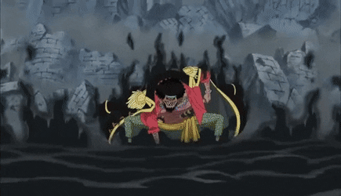

Paramecia
Las frutas paramecia dan al consumidor un poder que puede afectar tanto a su cuerpo, como a la manipulación del entorno o la generación de algunas sustancias.


Las frutas paramecia dan al consumidor un poder que puede afectar tanto a su cuerpo, como a la manipulación del entorno o la generación de algunas sustancias.
Hay ciertas frutas del diablo que son conocidas como paramecia especial y aunque los detalles sobre ellas no han sido explicados, el consumidor de una de ellas muestra habilidades muy parecidas a las de una fruta del diablo de tipo logia.
Las frutas logia dan a sus consumidores la capacidad de transformarse en un elemento natural, crearlo y controlarlo a su antojo. Estas frutas son las más raras a excepción de las zoan mitológicas. También son muy poderosas debido a que vuelven intangible al usuario que las posea si no se logra tener algún elemento que le pueda afectar o poderes especiales para ello.
Tambien existe una logia especial, la de oscuridad, esta no otorga intangibilidad, pero tiene el poder para absorberlo todo y anular cualquier poder de otra fruta. En la actualidad esta la posee uno de los antagonistas principales, Barbanegra.
Las frutas zoan permiten al consumidor transformarse en una especie de animal completo y una forma híbrida del animal y su forma original a completa voluntad.
Las frutas zoan míticas son muy
raras e inmensamente poderosas.
Estas frutas permiten a sus
consumidores transformarse en
criaturas mitológicas.
Las frutas tipo zoan prehistóricas es un tipo
de fruta zoan muy raro que permite a quien
la come transformarse en animales antiguos,
como los dinosaurios.